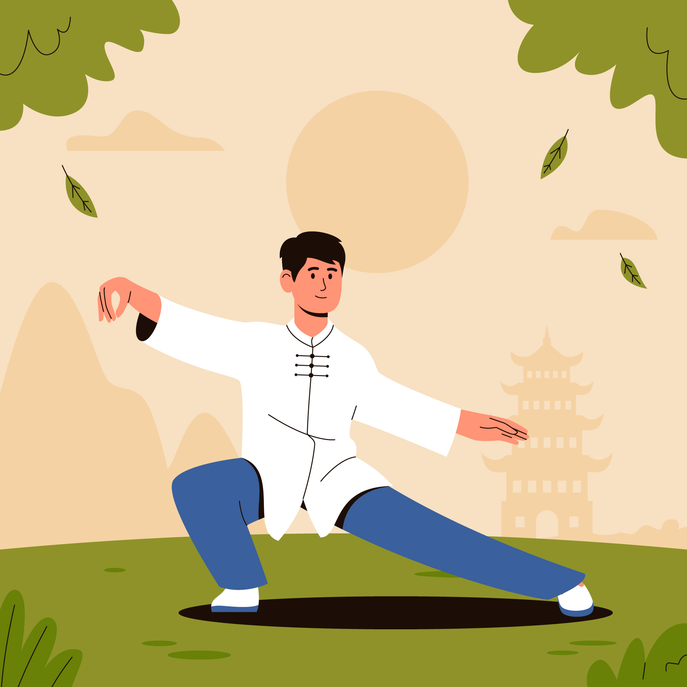

Sports🏃♂️
I am not an athlete but I enjoyed exercising. Here are some sports I do enjoy practicing.
Yoga🧘

I put yoga in the first position, because it is the sport I really practice everyday. I have been practicing yoga for few years, mainly on my own, but when I have the opportunity, I try to practice with other people and a teacher.
What I like about yoga is despite its relaxing property, yoga is a good way challenge yourself physically and mentally. Spoiler alert: every pose is not always easy. Also, I think yoga is adapted/ could be adapted to everyone at every age.
Martial Arts🥋
I started martial arts with judo as a lot of kids, then I praticed a lot of different martial arts.
I do have a preference for Japanese martial arts: I like the ritual, the discipline, the clothes... And one of my favorite martial arts is Aikido: I like the movement and the philosophy behind it.
However, recently I discovered (and finally tried) Taichichuan, which was my dream to learn learn and practice it, and I do love it. The good thing is as yoga, I can continue practicing even if I get older. As yoga, Taichichuan could be also challenging: the movements are very slow, so you have to learn to control your body, your balance and your core. It is like meditation in movement.
Running🏃

Nobody likes running...
That is what I thought as well, I still think so in a way. When I was a kid, I very slow -sluggish- and I was lacking of stamina. However, as an adult, I rediscovered running (I am still slow and lacking of stamina), it is still a pain in the neck, but I kind of like it now. I like to push my limits and after the exercise, I feel soooo good.